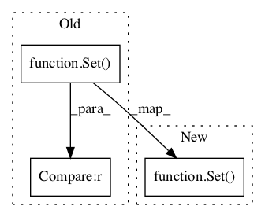

Pattern ID :204

Before Change
s1 = Set(1,2,3)
s2 = s1.copy()
self.failUnless(s1 == Set(1,2,3))
self.failUnless(s2 == Set(1,2,3))
def testRepr(self):
"nltk.set.Set: representation tests (glass-box)."
After Change
s1 = Set(1,2,3)
s2 = s1.copy()
self.failUnlessEqual(s1, Set(1,2,3))
self.failUnlessEqual(s2, Set(1,2,3))
def testRepr(self):
"nltk.set.Set: representation tests (glass-box)."
In pattern: SUPERPATTERN
Frequency: 3
Non-data size: 3
Instances
Fragment ID: 371425
Project Name: nltk/nltk
Commit Name: a59a4e39a52e99563420ac1a9a490f2f84511d5a
Time: 2003-07-27
Author: edloper@ldc.upenn.edu
File Name: src/nltk/test/set.py
Class Name: SetTestCase
Method Name: testCopy
Fragment ID: 371421
Project Name: nltk/nltk
Commit Name: a59a4e39a52e99563420ac1a9a490f2f84511d5a
Time: 2003-07-27
Author: edloper@ldc.upenn.edu
File Name: src/nltk/test/set.py
Class Name: SetTestCase
Method Name: testEqual
Fragment ID: 371423
Project Name: nltk/nltk
Commit Name: 5ae19e12ce286d375967cec055d322147cda242a
Time: 2003-07-27
Author: edloper@ldc.upenn.edu
File Name: src/nltk/test/set.py
Class Name: SetTestCase
Method Name: testInsert